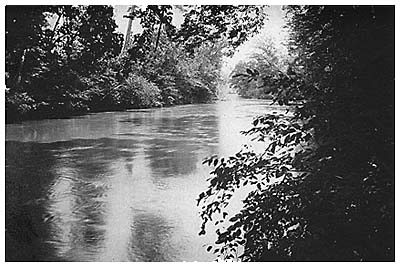
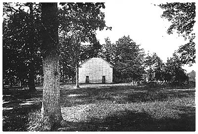

152
WILLIAM SMOOT5
AND
HIS DESCENDANTS
William Smoot, son of John, was born about 1750 in St. Mary's County, Maryland. He married twice, and it seems as if both wives, certainly the second, were of Jenifer lineage. The name of his first wife is unknown, but at least two of her children bore the distinctive family cognomen of Jenifer. This first union probably occurred in St. Mary's County prior to 1778. His second marriage, however, took place in Madison County, Virginia, where on June 24, 1793, license was obtained to marry Margaret Jenifer. In his will he referred to three of his sons with the given names of Jenifer, and it is noticed that in subsequent public records two other sons appeared with "J" as a middle initial.
Children of William Smoot
1. Jenifer Smoot married Rebecca Melone. q.v.
2. William Smoot married Elizabeth Loker. q.v.
3. Daniel Jenifer Smoot married Polly Anderson. q.v.
4. John Jenifer Smoot married Mary Trout. q.v.
5. Elisha A. J. Smoot. q.v.
6. Samuel Jenifer Smoot married Rebecca ----. q.v.
7. Eliphalet Smoot married Mary ----. q.v.
During the Revolutionary War William Smoot served his country, and in 1780 he was enrolled as a member of the militia forces of St. Mary's County in the same battalion with his brothers Cuthbert, John, and Thomas.1 In 1790 he was the head of a family in St. Mary's County, with 5 males under the age of 16, 2 females, and 3 slaves. According to tradition, he lived at one time near Occoquan, Prince William County, Virginia, which was probably between the years 1790 and 1806, for by the latter year he was domiciled in Rowan County, North Carolina, with his family. On January 12, 1807, in the latter county he certified a deed of his half-brother.
He acquired much land in North Carolina, though the records fail to show any purchases or grants, and it is not believed that he was bequeathed any through last wills and testaments. At the census of 1810, he appears as the head of a family, with his three youngest sons at home and a feminine member of approximately
________________
1 Unpub. Md. Records, Md. Hist. Soc., Balto., p. 251.

South Yadkin River, North Carolina
Passing Through the Land Owned by Alexander Smoot II
153
his age who was probably his wife, His wife, however, predeceased him, as she was not mentioned in his will.
The will of William Smoot was dated May 13, 1815, and proved at the August term of the court in Rowan County, North Carolina, by Samuel Little and Elisha J. Smoot. Jenifer was willed negroes and other personalty as well as the second son William. Daniel Jenifer was bequeathed negroes and land on Third Creek adjoining the estate of Solomon Dickson, containing 50 acres. John Jenifer was devised negroes and 160 acres of land adjoining that of John Reavis, also $40 to be paid him by his brother Eliphalet, $50 to be paid him by his brother Samuel within four years, and $30 to be paid him by his brother Elisha within three years. Elisha received negroes and 160 acres of land adjoining that of John Cooke and William Stillman. Samuel was bequeathed negroes and the dwelling-plantation and various personalty at majority. The residue of his estate was to be sold at auction and the proceeds divided among the five youngest sons. Daniel Jenifer and Elisha were named as executors. He signed his name as William Smoote Sr.
Jenifer Smoot6
(1778 - 18--)
Jenifer Smoot, son of William by his first wife, was born about 1778 in St. Mary's County, Maryland. On October 5, 1805, in Orange County, Virginia, he negotiated a bond to marry Rebecca, the daughter of John Melone, with Michael Lower as his surety and William McCome as the witness. He subsequently migrated to Rowan County, North Carolina, with his parents, where in 1810 he was the head of a family with his wife, two girls and a boy--the children all being under 10 years of age.
On July 25, 1810, he purchased from Gilbert Nowell, of Rowan County, 102 acres of land on the waters of Hunting and Bear Creeks. The transaction was witnessed by John Little Jr. On November 11, 1812, he conveyed this tract for $200 to William Fulford, at which time William Jarvis and John Boone witnessed the transfer.
He returned to Orange County, Virginia, perhaps the native country of his wife, and there on July 30, 1814, he enlisted for services in the War of 1812. His first term extended to November 30, 1814. On December 11, following and to February 4, 1815, he served as a private in an artillery company commanded by Captain Law T. Dade, at which time he was stationed at Camp Holly, Virginia, attached to the First
154
Virginia Regiment, commanded by Colonel Yancey. At discharge he was granted travel allowance for 100 miles "from Camp Holly to Orange County Court House", the latter place being the point of rendezvous.
William Smoot5
(1780 - 1852)
William Smoot, son of William, was born December 22, 1780, in St. Mary's County, Maryland. On February 11, 1808, in his native county he secured license to marry Elizabeth Parrott, the daughter of Thomas and Rebecca (Mackall) Loker, of St. Mary's County. He lived for a time in the county of his birth, where he was the head of his household at the 1810 census.
Locks of the hair of William Smoot, his wife, and all ten children have been carefully preserved to the present day and are now in possession of a great-granddaughter, Miss Annibel Stine, of Tuscumbia, Alabama. The births of the following children were taken from an old sampler, now in possession of Miss Stine.
Children of William and Elizabeth (Loker) Smoot
1. Thomas Loker Smoot married Elizabeth Waters. q.v.
2. William Smoot, born Jan. 2, 1811, d.s.p. 1836.
3. Ann Elizabeth Smoot, born Sept. 1, 1812, died July 10, 1845, married Dec. 29, 1836, at Tuscumbia, John Helden, born Aug. 3, 1810, at London, died Apr. 24, 1846. Issues: George Franklin, born Sept. 29, 1838; Rose Ann, born Jan. 20, 1841, married Dec. 26, 1878, Benjamin Franklin Stine, born Mar. 22, 1842; Charles William, born Mar. 22, 1842; and 5 infants died young.
4. Rebecca Smoot, born 1814, died 1818.
5. Priscilla Isabella Smoot, born May 15, 1816, d.s.p. Apr. 11, 1883, married first cousin, Isaac, son of Thomas and Margaret (Loker) Young.
6. Eliphalet Smoot, born Jan. 6, 1818, died 1828.
7. Cynthia Everlina Smoot, born Jan. 6, 1820, married William Mulligan, settled in the West. Issues: William; James, etc.
8. Margaret Loker Smoot, born Oct. 30, 1821, died June 1893, married 1838 at Tuscumbia, Edward Washington Manley, died July 27, 1872, at Tuscumbia, son of William and Mary Manley. Issues: William Edward, born Mar. 4, 1839; Mary Lavinia, born Apr. 19, 1842; Daniel Napoleon; Columbia Everlina; and Marion Wallace (q.v.).
9. Daniel Smoot, born Aug. 24, 1823, d.s.p.
10. John Mackall Smoot, born 1826, enlisted Apr. 29, 1847, 3d U. S. Regt. of Dragoons, killed in action, Mexican War.
155
His youth was spent at his father's home in Virginia, according to tradition near Occoquan, but facts seem to place it in Madison County. At other times he lived in Rockbridge County, Virginia, "Kanrow City near Elk River", and in North Carolina. A letter addressed to him at Kanrow City in 1822 by his mother-in-law, still in possession of a descendant, asked, "What has become of the Jenifer Smoots and all of them?"
On July 18, 1816, after a residence of a few years in Rowan County, North Carolina, he conveyed to Baker Johnson land on the south fork of the Yadkin River where he "formerly lived", being part of a tract granted to Caleb Webb by patent in 1784. The consideration was $1,200. His wife Elizabeth P. Smoot relinquished her dower, and the deed was proved by E. A. J. Smoot and Richard Stroud.
On July 21, 1834, William Smoot, no domicile mentioned, gave his receipt to Thomas Loker, of St. Mary's County, the administrator of John Mackall Jr., for $150 which was his wife's share in the estate of the said John Mackall.
About 1835 he and a party of Virginians, including Carters, Atkinsons, Cooks, and others, migrated southward and after three weeks of travel they ultimately settled on the south bank of the Tennessee River at Tuscumbia, Alabama, where a number of his descendants are still living. It is traditional that enroute he visited his brother "Dr. Smoot" somewhere in Kentucky. He died at his home in Tuscumbia on March 27, 1852; his widow survived until August 10, 1853.
Daniel Jenifer Smoot6
(1784 - 1843)
Daniel Jenifer Smoot, son of William by his first wife, was born January 1, 1784, in St. Mary's County, Maryland, according to his family Bible now in the possession of a descendant. He spent his later youth in Virginia, then migrated with his parent to Rowan County, North Carolina. On December 27, 1811, in that county he negotiated a bond to marry Polly Anderson, with Garland Anderson and John March Sr. as his sureties.
Children of Daniel Jenifer and Polly (Anderson) Smoot
1. Harriet Smoot.
2. Nancy Smoot.
3. Hezekiah Smoot married Lucy.----. q.v.
4. William Smoot married Martha de Jarrell. q.v.
5. Charles A. Smoot, born 1818.
156
6. Alexander Smoot married Julianna ----. q.v.
7. Daniel Jenifer Smoot, born 1824, died June 26, 1880.
8. Samuel Smoot. q.v.
9. John Smoot.
10. Richard Smoot married Eleanor Witten. q.v.
11. J. (son) Smoot.
12. Thomas A. Smoot, born 1836, settled in Kansas City, Mo., living in 1906; had issues.On July 12, 1812, Daniel Jenifer Smoot purchased from James Hanna and his wife 100 acres of land, at which time Charles Anderson Sr. witnessed the conveyance. On December 23, 1814, he sold to John Welch for £180 land on Hunting Creek, with John Lock and Eliphalet Smoot as witnesses. His wife Mary Smoot waived dower. On August 10, 1820, he conveyed to Richard Anderson for $650 land on Andrew's Creek, consisting of 150 acres, beginning at a sycamore on Garland Anderson to an oak on William Iiams' line, then south to William Iiams' line. The deed was witnessed by Garland Anderson and Eliphalet Smoot. On August 22, 1823, he sold to John Smoot for $400 land of 200 acres on the bank of Hunting Creek. The transfer was witnessed by Charles Anderson Sr., and signed by Daniel J. Smoot and Polly Smoot.
During 1825 Daniel J. Smoot and his young family left Rowan County and settled on the Pond Fork of the Little Coal River in Logan County, Virginia (now Boone County, West Virginia), bringing a number of slaves with them. There he found Price cousins, children of his aunt, Eleanor (Smoot) Price. It is traditional that the Price family was among the first settlers in that section of West Virginia.
On April 9, 1829, as a resident of Logan County, Virginia, he purchased from John Smoot of Rowan County, land on Hunting Creek containing 200 acres. The conveyance was witnessed by James Glascock, Beal Iiams, and Jesse Oakes. Five days later he sold this tract to James Glascock and William Casey, of Rowan County, and to Abner F. Caldwell and John M. Young, of Iredell County, North Carolina.
The census schedules for 1830 and 1840 show Daniel Jenifer Smoot to be one of the largest slave owners in Logan County, a portion of Virginia, which was not a strong slave-holding section. He died on November 15, 1843, and his widow died on December 7, 1880.
John Jenifer Smoot6
John Jenifer Smoot, son of William, was born between the years 1784 and 1794 in St. Mary's County, Maryland. He migrated with his parent to Rowan County, North Carolina, where on September 24, 1808, he signed a bond expressing his intentions to marry Mary Trout.
157
William Smoot, his father, and John March Sr., were sureties. In 1810 John J. Smoot with his wife was the head of a family in Rowan County, with a son less than 10 years of age. He, however, was not the head of a family in Rowan County at the 1810 census.
Elisha A. Jenifer Smoot6
Elisha A. Jenifer Smoot, son of William, on May 16, 1821, deeded 167 acres of land in Rowan County, North Carolina, to John Reaves. The conveyance was witnessed by John Little and Thomas H. Cain. No further record of him has been found in this research.
Samuel Jenifer Smoot6
(1797 - 1883)
Samuel Jenifer Smoot, son of William and Margaret (Jenifer) Smoot, was born 1797 in Virginia. At the 1880 census as a resident of Davie County, North Carolina, he stated that his father and mother were born in Maryland. He accompanied his parents to Rowan County, North Carolina, and at the death of his father in 1815, a minor, he was bequeathed the dwelling-plantation which lay in the vicinity of Calahala post office.
On February 3, 1820, he conveyed to Basil Dyson, of Rowan County, for the consideration of £25 land which had been deeded by Abraham Bromdon to Henry Hicks, and from the latter to Leven Benston hence to John Prather. It was then bought by William Smoot at a sheriff sale and willed to him by his father William Smoot. The tract was adjacent to the land of William Howard. The conveyance was certified by Garland Anderson, James Davis, and Charles Andrews. On January 10, 1822, he purchased from Jacob, John, and Robert H. Hughey 170 acres of land in Rowan County, at which time William Price witnessed the deed of conveyance.
It was not until about 1838 that he married Rebecca ----, a native of North Carolina as well as her parents.
Children of Samuel Jenifer and Rebecca Smoot
1. Mary A. Smoot, born 1840.
2. Daniel J. Smoot, Lieut. 4th N. C. Regt. C. S. A., killed in action May 19, 1864.
3. Eleanor Smoot, born 1845, married ---- Daniel.
4. Susan Smoot, died young.
5. William Smoot, born 1849.
6. Alexander Smoot, born 1851.
158
7. Thomas M. Smoot, born 1854, married Mar. 15, 1877, Jennie Bell Coon, born 1857; she married secondly H. E. Robertson, May 20, 1897.
8. Samuel Jenifer Smoot, born 1856.
9. George W. Smoot, born 1859, died young.
10. Susan Smoot, born 1860.
11. Emily Smoot, born 1863, married Jan. 2, 1889, A. C. Hansard.
12. George Washington Smoot, born 1865.
The will of Samuel Jenifer Smoot was dated May 25, 1880, and proved in 1883 in Davie County, with his son George W. Smoot as the executor. He willed his wife, Rebecca, his entire landed estate and personalty, and mentioned the following children--Mary A. Smoot, Eleanor Daniel, Susannah Smoot, Alexander Smoot, Samuel J. Smoot, Emily T. Smoot, and George W. Smoot.
His daughter, Ellen Daniel, of Davie County, negotiated her will in 1909, and left her entire estate to her nephew Charles Clinton Smoot, the husband of her niece Mary Lizzie Smoot, which included 38 acres of land adjoining the land of Rebecca Martin, A. L. Dayvalt, and others, being the division of the land of Samuel J. Smoot "my father".
Eliphalet Smoot6 Eliphalet Smoot, son of William, was born prior to 1790, probably in Maryland. There is a record of an Eliphalet Smoot who enlisted as a private in the militia of Anson County, North Carolina, during the War of 1812, then there is an enlistment of an Eliphalet Smoot at Fayetteville, on August 17, 1813, as a drum major in the militia under Major Cameron. On September 23, same year, he was attached to Captain David L. Evans' Company of Drafted Artillery, and was reported "sick" at Deepwater Point. The original of the following is on file at the Adjutant General Office, Washington.
"This is to certify that Eliphalet Smoot musician in my company has faithfully served the term of Five Months and two days in the Service of the United States and has not receive any compensation for the same as well appear from the Muster Roll. His turn of Service Expired on the 19 Instant he is further Entitled to pay for traveling home one Hundred and Seventy five miles given under my hand at Camp Deep Water Point North Carolina this 20 January 1814".
(Signed) David L. Evans Capt.Eliphalet Smoot, who was born 1811 in North Carolina and the head of a family in Davie County, North Carolina, in 1850, was probably a son. In that year he had in his household his wife Mary, born 1826 in North Carolina, Nancy Holman, aged 17, and the following children--Samuel Smoot, aged 4, Thomas Smoot, aged 2, and Margaret Smoot, born September 1850.
159
Thomas Loker Smoot7
(1808 - 18--)
Thomas Loker Smoot, son of William and Elizabeth (Loker) Smoot, was born December 16, 1808, in St. Mary's County, Maryland. On January 20, 1841, he secured license in the National Capital to marry Elizabeth Waters, born 1813 in Virginia, according to the census records.1/DD>
Children of Thomas and Elizabeth (Waters) Smoot
1. Annie Smoot, born 1842, married Allan Goff. Issues: Rosa and Lucy.
2. Albert Smoot, born 1844, d.s.p. in railroad accident.
3. Thomas Edgar Smoot, married Lucy Willingham. q.v.
4. George Henry Smoot, married Marion Manley. q.v.
5. Lou Ellen Smoot, born 1850, died 1878.
6. Addison Smoot, born 1852, married in Corinth, Miss., and settled in Texas.
Thomas Loker Smoot did not accompany his parents to Alabama, but remained in Virginia until 1848. While enroute by water to join his father at Tuscumbia, his fourth child was born. The 1870 census shows him as a wagon maker and his birthplace as Maryland. He, his wife, and daughter were victims of the yellow-fever epidemic of Tuscumbia in 1878. The North Alabamian of October 22, that year, records the following: "Died on the 22nd Mrs. T. L. Smoot in the 56th year of her age", (the 1870 census states her age as 57); the October 25 issue, "Died on the 23d, Miss Ellen Smoot in the 28th year of her age", "Mr. T. L. Smoot and Mrs. Manley are improving". Thomas Loker Smoot recovered and died several years later.
Hezekiah Smoot7
(1814 - 1898)
Hezekiah Smoot, son of Daniel Jenifer Smoot, was born July 4, 1814, according to one record at Knoxville, Tennessee, others cite North Carolina and Virginia. He accompanied his parents to Logan County, Virginia, and there he married Lucy B. Smith, born about 1824 in Wood County, Virginia, but whose parents were natives of Ireland. In 1850 he was the head of a family in Boone County, with his wife, an 8-month old son, and a number of his wife's relatives bearing the name of Smith. The following children were at home in 1860 or 1880--De Clifford, born 1850; Richard, born 1855; W. T. (son), born
________________
1 For the genealogy of the Waters Family, of Anne Arundel County, Md., see "Anne Arundel Gentry", by Newman.
160
1862; and S. M. (son), born 1865. It is said that eight sons and one daughter were born. He died at the age of 84 years, and his wife at 83, both being buried at Marmet in Kanawha County.
William Smoot7
(1816 - 18--)
William Smoot, son of Daniel Jenifer and Polly (Anderson) Smoot, was born about 1816 in Rowan County, North Carolina. He settled in Logan County, Virginia, with his parents and there about 1838 he married Martha A. de Jarrell, born 1820, in Iredell County, North Carolina.
Children of William and Martha (de Jarrell) Smoot
1. Anne R. Smoot, born 1840.
2. Victoria A. Smoot, born 1842, died young.
3. Daniel Jenifer Smoot married Mary A. Atkins. q.v.
4. John R. Smoot, born 1845, married Sarah D. ----, born 1845, in Va. Issues: William, Minty, Mary Ella, Flora, etc.
5. William T. Smoot, born 1847, married Elizabeth Stallings, widow.
Alexander Smoot7
(1821 - 18--)Alexander Smoot, son of Daniel Jenifer and Polly (Anderson) Smoot, was born 1821 in North Carolina. He married Juliana ----, born 1823, in Kanawha County, Virginia. The following children were at home in 1860 or 1880--Elizabeth P., born 1845; Wilmot J., born 1846; Mary Frances, born 1848; Julia, born 1849; Charles, born 1854; Alexander, born 1855; James, born 1857; Joseph, born 1861; Sophia, born 1864; Cornwell (?), born 1866; and Hezekiah, born 1869.
Samuel Smoot7
(1826 - 18--)Samuel Smoot, son of Daniel Jenifer and Polly (Anderson) Smoot, was born 1826 in Logan County, Virginia. The following children were at home in 1860--Elizabeth G., born 1851; Rulian A., born 1853; and Polly F., born 1855.
Richard Smoot, C. S. A.7
(1832 - 1882)Richard Smoot, son of Daniel Jenifer and Polly (Anderson) Smoot, was born 1832 in Logan County, Virginia. During the War Between the States he settled in Tazewell County, Virginia, about six miles from
161
the county seat and in his native State he enlisted in the Confederate Army. On October 4, 1866, he married Eleanor White, born 1848 in Virginia, the daughter of Thomas White and Eleanor (Harrison) Witten. He died August 4, 1882; his widow died June 19, 1902.
Children of Richard and Eleanor (Witten) Smoot
1. Samuel Rial Smoot, born 1868, unmarried.
2. Eliza Smoot, born Oct. 1870, married Jan. 22, 1890, Thomas Neel. Issues: Annie; John Richard; Bess; Zelma; and Eleanor.
3. Mary Marten Smoot.
4. Thomas Richard Smoot married Apr. 16, 1902, Kate M. Litz. Issues: Thomas Richard; Frank Litz; Hettie Kathryn; and George Witten.
5. Grace Smoot married Apr. 22, 1903, Troy M. Greear. Issues: John Richard; Sara Ella; and Peyton.
6. Jenna White Peyton Smoot, unmarried.
7. Essie Smoot married Feb. 4, 1903, Charles F. Brown.
Thomas Edgar Smoot8
Thomas Edgar Smoot, son of Thomas Loker and Elizabeth (Waters) Smoot, was born 1846 in Virginia. He married Lucy Willingham, and died in Florence, Alabama, where all of his children were born. He is interred in the city cemetery.
Children of Thomas and Lucy (Willingham) Smoot
1. Lorena Smoot married Jesse Dowdy.
2. Charles Bell Smoot, d.s.p.
3. Robert Samuel Smoot, born Jan. 1, 1874, died Oct. 15, 1918, married Dec. 6, 1899, Minnie, dau. of William Henry and Frances Catherine Cromwell.* Issues: Edward Hunter, born Apr. 12, 1916, and 2 children died young.
4. William Smoot married Nina Morrison and Otta Mae ----. Issue: (first) John.
5. Rosella Smoot married Thomas Half. Issue: Kathlean.
George Henry Smoot3
(1848 - 1905)
George Henry Smoot, son of Thomas Loker and Elizabeth (Waters) Smoot, was born September 28, 1848, on a vessel enroute to Alabama from Virginia. At Tuscumbia on December 27, 1876, he married his first cousin Marion Wallace, born September 30, 1848, at Tuscumbia, the daughter of Edward Washington and Margaret Loker (Smoot)
________________
* For the history and genealogy of the Cromwell Family of Maryland, see, "Anne Arundel Gentry", by Newman.
162
Manley. He died 1905 at Tuscumbia; his widow died 1933 at Avondale, Colorado.
Children of George Henry and Marion (Manley) Smoot
1. Irma Lorene Smoot, born Jan. 1878.
2. Nellie May Smoot, born May 1880, married John Alfred Stout.
3. Frank Newsum Smoot, born May 1882, d.s.p. 1908.
4. Elizabeth Wilson Smoot, born Mar. 14, 1883, married Feb. 16, 1908, at Tuscumbia, William Wesley, born Nov. 2, 1878, at Florence, son of Thomas and Martha Jane Anderson.
Daniel Jenifer Smoot, C. S. A.8
(1843 - 1918)
Daniel Jenifer Smoot, son of William and Martha (de Jarrell) Smoot, was born 1843, in Boone County, Virginia. Although his section of Virginia had little sympathy with the Southern cause in 1861, Daniel Jenifer Smoot manifested the ideals of the old aristocracy of Maryland and Virginia, and as a lad of nineteen he enlisted in 1862 at Charleston in Company D, under Captain Lawson of the 36th Virginia Regiment, known as "Logan's Wild Cats", and attached most of the time to Early's Division.
He figured conspicuously in the campaigns up and down the Shenandoah Valley and was with General Jubal Early in Maryland when the Confederates had the Federal Capital in consternation. He participated in seventeen general battles and was at Camp Lee, Richmond, when General Lee surrendered. After his furlough from the Confederate Army, he returned home to find much of the former wealth of his parents lost. He was a Democrat in politics and held several district and county offices in addition to his occupation of farming.
About 1867 he married Mary A. Atkins, born about 1845, in Giles County, Virginia, whose parents were also natives of that State. He died in 1918; his widow died in 1928.
Children of Daniel Jenifer and Mary (Atkins) Smoot
1. Walter W. Smoot, born Apr. 13, 1868, married Mary Mossena Griffith. Issues: Lester Boyd; Oma Alice; Lyda Jean; and Carlos Taylor.
2. Edgar W. Smoot, born Mar. 29, 1870, died 1935, married Rosalie Zinn.
3. Delmar A. Smoot, born Mar. 29, 1870, married Ora Vickers.
4. Lagertie C. Smoot, born Feb. 28, 1872, married Wilburn W. Hall. Issues: Leland Stanford; Grace; and Edgar Rudolph.
5. Bessie E. Smoot, born Apr. 22, 1877, married Mandyville J. Hopkins, Issues: Raymond Jackson and Murray.

Old South River Church
Ground Donated 1834 by Alexander Smoot II
Book Home Page Book Search Smoot &c Home Page
Intro. pp 1-6 pp 7-26 pp 27-49 pp 50-53 pp 54-55 pp 56-81 pp 82-105 pp 106-122 pp 123-128 pp 129-131 pp 132-140 pp 141-148 pp 149-150 p 150 pp 163-171 pp 172-184 pp 185-195 pp 196-204 pp 205-218
"The Smoots of Maryland and Virginia" by Harry Wright Newman, originally published privately in Washington D.C. in 1936. This edition edited and published by Frederick K. Smoot and the Smoot Family Association, copyright 2001.
You are Our Reader Since 16 February 2001
Last updated
Please Email Additions and/or Corrections to Webmaster